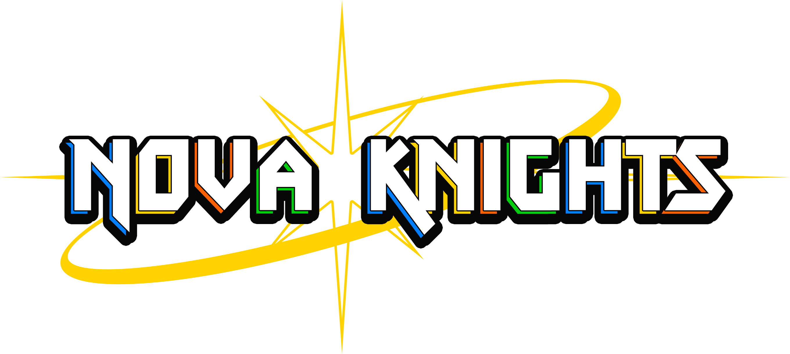

Simultech Multimedia is a company that creates an emerging genre of video games coined "Serious Games", or, games programmed for the purpose of acting as workplace training software. Simutech Multimedia specializes in simulation programs for electrical engineering.
The way the simulations act, is no different then a point and click puzzle game. Each object in the scene communicates with a solver that does all the complex math calculations and funnels events to the unity end. Once we receive these events we can then accurates display to the user what they wish to get.
I learned a lot about how their projects were handled in the first few months and how I could optimize the workflow and make it more effcient. The biggest challenge getting onboarded was how every program they were developing was comprised on an entirely different Unity project, each with its own unique codebase. I was tasked with designing a simple system "Marble". Marble was a git repository that contained every single common script within that, when pushed, would change everything you just pushed into every single project.
My second big workflow optimization was between Lead 3D Artist and I. Before I joined Simutech, every time a project needed a heavily reused component the team would remake it from scratch every time. The work around I implemented was to have every asset be in its own folder with its respective Material, Mesh and Prefab. I then used Unity's Asset Packaging system to pack everything together in single Package Asset. This allowed the artists to easily add UI elements(such as buttons) with all the parts required already set up.
Overall, working on this project has allowed me to improve my skills by being trusted with a large amount responsibility from the beginning. With the fixes to the workflow and the improvements to my programming skills I have reliably learnt how to rapidly produce content that is scalable, which I have applied to numerous other Simutech projects and my own.
During my third year of college I worked at Expired Games as a Contract Programmer for the length of 4 months. I was hired to help out on development of the game Nova Knights a hack and slash beatum up similar to games like River City girls and Castle Crashers.
During the 4 months I helped out to modify old code and to create new code from scratch. The largest responsibility I had was to create a modular dialogue system that could be changed to suit the scene. I created a bunch of generic triggers that when finished would send a Json file to the dialogue manager. When recieved the dialogue manager would parse different aspects of the file such as portraits,Fonts and the text itself.
Overall working with Expired Games was a great experince and I am happy they gave so much responsibility to a student.